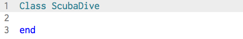
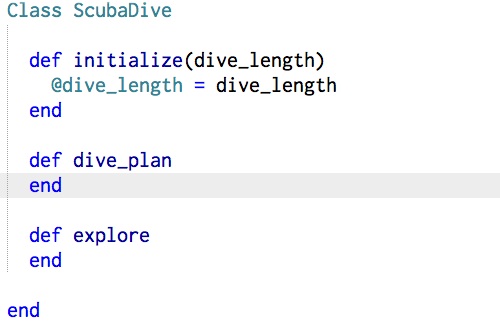
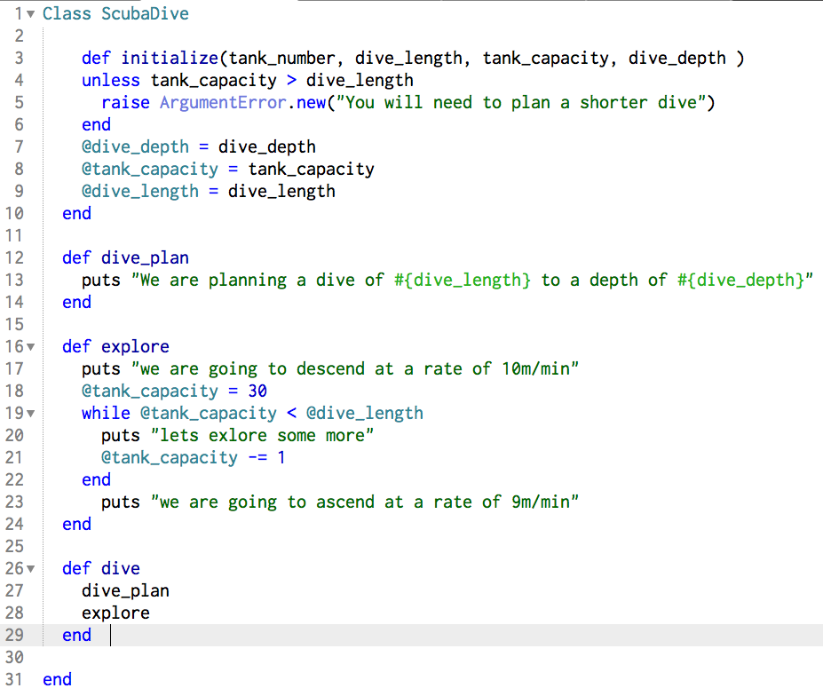
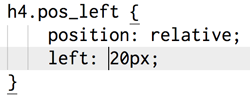

Week 7 - SQL Injection
What is it? SQL Injection is the process of inserting malicious SQL code into an database entry field and can result in potential manipulation of the SQL database by the end user. Exploits can be used to gain access to any stored data - user names, security information, and even credit card numbers.
Take the example of a log in page; where a legitimate user would enter a user name and password. When a legitimate user enters these details an SQL query is generated a submitted to the database for verification. When they user is verified they will be granted access. The web application that controls the login page communicates with the database via a series of planned commands to verify the user name and password.
Via SQL Injection is able to insert malicious SQL code into an entry field (e.g. User or password) and gain privileged access to the database - bypassing the login page.
Techniques do prevent SQL Injection.
Prepared statements or queriesrely on the developer defining all the SQL code, and then passing each parameter to the query later. This allows the database to differentiate between code and data.
Stored proceduresare similar to Prepared Statements in that they require the developer to define the SQL code first. The difference is that that the SQL code for a stored procedure is defined and stored in the database and called from the application.
There are many other ways to protect and prevent against SQL Injection on different databases. This is only a start.
Week 6 - Blocs, Procs, and Lambdas
Blocks - A block allows you to pass code to a method via curly brackets {} or the do...end block. The curly brackets are usually used for single line block while the do...end block is multi-line. A powerful component to block is the yield statement.
The yield statement defers execution of the calling method in order to evaluate the code in the block. The result is then evaluated by the remainder of the method.
One of the problems with blocks is that we would need to retype them when we use them on different objects. This is where a Proc comes in. A Proc can be stored in a variable and then passed to any method that can accept a callable object. A Proc is essentially a saved block. Blocks are not actually Ruby object and do not have the abilities of objects where as Procs do. A Proc is defined with the keys word(s) "Proc.new"
A Lambda is very similar to a Proc. A Lamda is defined with the key word "Lambda". A Proc returns immediately without going back to the calling method to finish the code. A Lambda passes control back to the calling method where it will finish any remaining code.
Week 5 - Ruby Classes: I created my own Ruby Class!
What is a Ruby Class?

A class in Ruby is simply an organization of objects that is in fact, an object itself. Above I have defined a class called "ScubaDive". Each class (and method) must be terminated with the keyword end. This class is empty right now, but they can contian strings, arrays, methods, etc - anything that helps define the class. Classes are the building blocks of other objects.
Now, I can start filling the class with methods that will help define "ScubaDive". Since an object built by a class is called an instance of that class - When you call the method new on "ScubaDive" you would have an instance of the class "ScubaDive".
Take the example of scuba diving. Each dive consists of a dive length, dive depth, and tank capacity. These characteristics (and many others) begin to form the data members of the class "ScubaDive". You can differentiate one dive from the other with the help of these characteristics. A class can also contain certain functions - I have added these functions as the methods "dive_plan", and "dive_route". In the "initialize" method I have also defined a few variables called instance variables. By starting these variables with an "@" symbol they will be avaiable throughout the Class "ScubaDive".
Below you can see my class beginning to take shape. I have added a few more instance variables and methods. The last method called dive calls all the other methods in the class. Now when I call hawaii_dive = ScubaDive.new(20, 30, 75) I will get a new instance of my class.

Week 4 - the Enumerable #group_by method
The goup_by method takes a collection and then groups it by the results of the evaluated block. A hash is returned where the keys are the evaluated from the block and the values are arrays of elements in the collection the corresponds to the keys.
Perhaps, it would be easier to conceptualize with an example!
Here is our collection:
# cities = ["San Francisco", "New York", "San Jose", "San Diego", "Chicago", "New Haven", "Miami", "Charleston"]And now our group_by method:
# grouped_by_first_letter = cities.group_by { |s| s[0] }
This is what is happening in the method and block.
- creats a new array (grouped_by_first_letter) based on the results of the evaluation.
- The block { |s| s[0] } evaluates strings |s| based on their first letter s[0].
The results:
# {"S"=>["San Francisco", "San Jose", "San Diego"], "N"=>["New York", "New Haven"], "C"=>["Chicago", "Charleston"], "M"=>["Miami"]}
Week 3 - JavaScript
Question - Why is JavaScript popular in web development? What are the great things about JavaScript?
First of all it's use has exploded. It is popular for computers and all sorts of mobile devices. With the use of HTML5 there are also powerful ways to access and use JavaScript.
JavaScript has a relatively low entry point to start programming. New users can start coding and get results quickly.
Question - What are its limitations?
These are some complaints about JavaScript:
- lack of syntax sugar
- no OPP - object model
- There is no way to write to server side files
- JavaScript cannot access a database
- JavaScript cannot close a window if it did not open it
Additionally, I have heard it said that because it is easy to learn there are a lot of amateur programmers out there releasing amateur, buggy programs.
Week 2 - CSS Differences
Question - What are the differences between relative, absolute, and fixed positioning?
First, to understand the above you need to understand static positioning. Static positioning is the default for every page element.
A relative position strictly means relativerelative to its normal position. The element shifts from where it was, as if it were in a static position, on the X or Y axis. A relative position of (left:20) adds 20 pixels to the elements left position. (see figure 1)
A position of Absolute allows you to pick exactly where you want the element in relation to the parent element that it is enclosed by. Absolutely positioned elements are removed from the normal flow of the webpage. The document and other elements behave like the absolutely positioned element does not exist.
The Fixed positioning is relative to the viewport (browser window) itself. The element will even stay in position if the browser window is scrolled.
Week 1 - Compare Websites

CSS Zen Garden
I mainly like this site becuase it gives me some inspiration about what CSS can end up doing. Visitors on the site are encouraged to click links that load different CSS style sheets just to see what different disigns look like. The HTML code is all the same.
My eye is drawn to the unity of the entire page. Each CSS style sheet produces an entirely new look and feel, but overall the designs are well integrated and creative. I would describe this site as elegant, integrated, serene, and simple.
From a content perspective, the site is designed to show what can be accomplished with advanced CSS techniques. The content is focused, broad, and inspirational. This is similar in feeling to how I described the overall design. Furthering the feel of unity.
Navigation is very simple on the site. The content is delivered simply and it is all easy to get at. After being on this site I feel inspired to create some great CSS designs!

NPR.org
I visit this site on a regular basis for news. My eyes are immediately drawn to the NPR logo and then fluidly down the center column and to the image where the first news posts start. When I stand further back, the image in the center column becomes the focus of my attention. The focus of this site is around news content and it is delivered in a very clear and easy to read manner. I would describe the site as simple, clear, basic, easy-on-the-eyes, and neutral.
NPR.org steers away from sensational and tabloid style stories to deliver relevant and timely news content, plain and simple. It seems like NPR is in direct opossition to other widely visited news sites (CNN.com, Fox News, etc) that focus on sensationalism and tabloid type news. The content is clear, precise, focused, and informative. Again, the content and design feel integrated. Content is easy to find with a prevelant seach bar on each page. The site usually leaves me feeling focused, albiet when I read too much bad news, kind of anxious...

The Oatmeal
I visit this on a weekly basis. The comics and cartoons are whimsical and fun! Usually there is some sort of wacky graphic that draws my eyes to it right away when I visit the page. While the graphics aren't very pretty or even good in some cases they are funny. When I stand back the text sort of seeps into the background and the only thing present is the graphic elements. This site is garish, funny, organized, quirky, and a little in-your-face! The graphic elements serve almost as an advertisement for the linked comic. I guess, in this way it is good to have my eyes focusing on the graphic elements.
The Oatmeal is essentally and artists site. Providing has unique view on the world. The content is oriented around personal comics. The are thought provoking and fun. I would describe the content as whimsical, personal, crass, and insightful. This content is integrated with the design look and feel.
The content is easily accessible, but if you don't know what you are looking for you just have to settle for what is up front. There is a search bar, but again if you don't know the name of what you want or aren't familair with the content you are just shooting in the dark. However, the "Most Popular" side bar is very useful for newbies on the site.
I usually get lost on the site for a while - arbitrarily looking at comics. The personal nature of the comics keeps it from having a "I just wasted a lot of time" feel to it. The site does sell poster, t-shirts, and other swaggy sorts of things. I havn't purchased anything from the site.